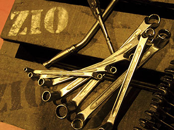

NeoTune
今のお車の乗り心地に満足してますか？
今乗っているお車のショックアブソーバーを加工してより良い乗り心地に調整します！
NeoTuneとは
これまでの乗り心地はショックアブソーバーを社外品に交換というものが一般的でしたが、NeoTuneは純正ショックアブソーバーを加工して乗り心地を改善します。
お車にすでに装着済みのショックアブソーバーを取り外し、その場でお車に合わせてオイル封入加工・調整を行います。サスペンションのストローク量に合わせて異なる固さのオイルを封入することでよりよい足回りの動きを実現します。
通常であれば、朝お車をお預かりして、夕方納車いたします。従来のショックアブソーバーの買い替えとはことなり安価・短時間で対応が可能です。
特許取得技術（特許第4115505号）をぜひ一度おためしください！
Neotuneの特徴
- 乗り心地アップ
- ノーマルよりソフトにもハードにもお客さまのご要望に合わせてオリジナルのセッティングをいたします
- コーナリング性能アップ
- ロール量やロール速度を低減してコーナリングの安定性を向上します
- ブレーキング性能アップ
- フロントダイブ量やダイブ速度を抑えブレーキング性能を向上します
- 接地性能アップ
- タイヤの変磨耗を低減し、タイヤの性能や寿命を向上します
- 走行安定性アップ
- アクセルとブレーキの無駄な操作を減らして、無駄な燃料消費を防ぎます
- エコロジー
- ノーマルショックアブソバーを再利用することで廃棄物の減らします
ラインナップ
NeoTuneは目的に合わせて3コースを揃えています。このラインナップを中心にお客さまのご要望に合わせたオリジナルのセッティングをいたします。
- コンフォート(CFT)
- 乗り心地を最優先にしたセッティング ファミリーカー・タクシーなどに最適です。
- スペシャル(STD)
- ショックアブソーバーをリフレッシュしたい方向けのセッティング 幅広い車種に最適です。
- カスタム(CUM)
- 走りを求めたセッティング・ローダウン車両やキャンピングカーなど特殊な車両向けセッティング。
車のバタつきを抑えたい・コーナーでの姿勢を安定させたい等などお客さまのご要望をお伝えください。それに合わせたセッティングを行います。
プライスリスト・作業時間

価格はショックアブソーバーのオイル容量により追加が発生する場合があります
- コンフォート(CFT)
- 作業時間：4時間〜
- お値段：64,000円〜
- スタンダート(STD)
- 作業時間：4時間〜
- お値段：64,000円〜
- カスタム(CUM)
- 作業時間：4時間〜
- お値段：70,000円〜
お支払い
現金でのお支払い以外に、VISA・マスターカード・アメックスの各種クレジットカードもご利用いいただけます。
その他、アプラスローンではご利用時にTポイントもついてさらにお得に！